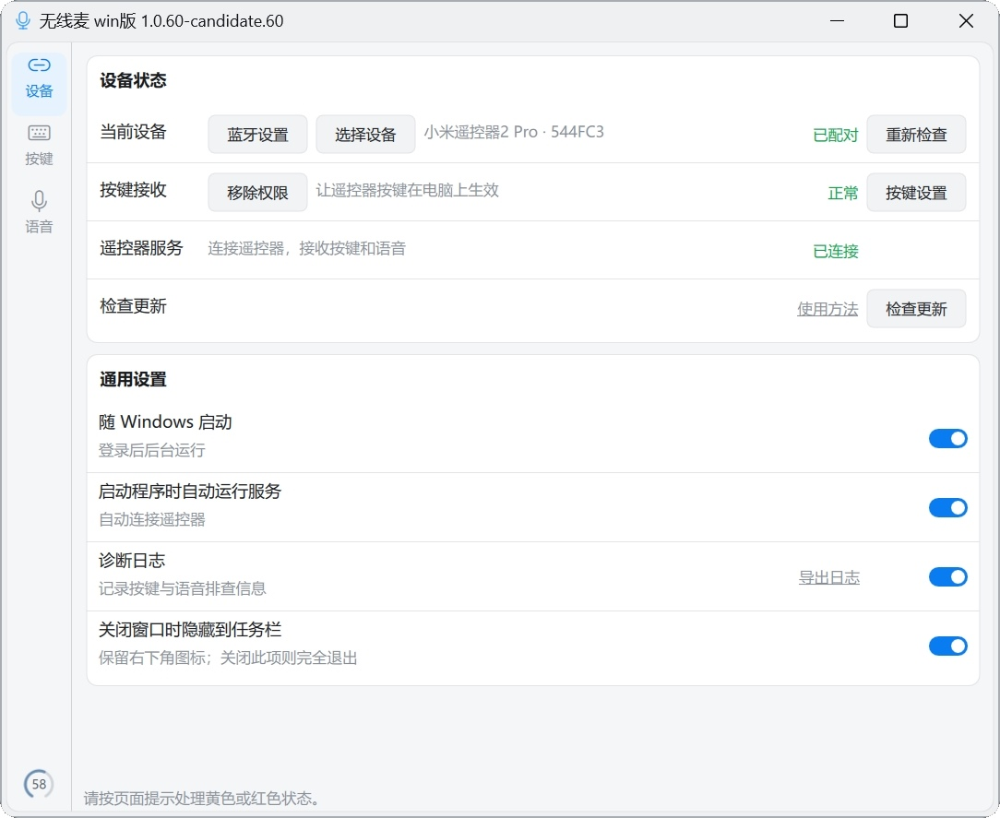

MiOpention · Windows 10 / 11
把遥控器，
变成你的输入设备。
小米蓝牙语音遥控器 2 Pro 的每一个按键、每一次说话，都能直接落到 Windows 上：切应用、翻文档、按住说话、触发快捷键。坐在沙发上，也能把电脑用得顺手。
02 / 语音
按住说话，
按住说话，
松手就是文字。
遥控器自带麦克风，或者电脑上插着的麦克风都行。MiOpention 把声音送进输入法，输入法负责把话变成字——搜狗、微信、豆包都可以。
STEP 01
选麦克风
遥控器模式直接用遥控器收音；本机模式用电脑麦克风，语音键可以绑到任意按键。
STEP 02
对齐快捷键
在 MiOpention 和输入法里填同一个语音快捷键。输出端点选 CABLE Input，输入法麦克风选 CABLE Output。
STEP 03
按住说
先在记事本里用键盘试一次快捷键，再用遥控器按住说话。短按补偿可以按输入法的习惯开关。

03 / 按应用
换一个窗口，
换一个窗口，
换一套按键。
浏览器里方向键用来翻页，剪辑软件里用来逐帧，阅读器里用来滚动。为不同应用各存一套按键布局，切过去就自动生效。
没配置的按键回落到全局映射，不会因为忘了设置而失灵。配置可以复制、重命名、导出和导入。
04 / 数据边界
先说清楚，
先说清楚，
数据去哪儿。
遥控器地址、按键记录、录音、配置和日志，只留在你自己的电脑上。
MiOpention 不设账号、不上传录音，也不会把按键记录发给任何服务器。检查更新只向 GitHub 读取公开的发布信息。需要结束程序时，从通知区域选择“完全退出”。
使用
第一次使用，
第一次使用，
三步就够。
- 连接遥控器在 Windows 蓝牙设置里配对，再在 MiOpention 的“设备”页选择设备并启动服务，按提示处理未就绪的项目。
- 设置按键到“按键”页选中遥控器按键，设置单击、双击或长按动作，点“完成”即保存。
- 设置语音在“语音”页安装音频组件，填好与输入法一致的语音快捷键，输出端点选 CABLE Input，输入法麦克风选 CABLE Output。
- 完全退出关闭设置窗口只是隐藏到通知区域；需要结束时右键通知区域图标，选择“完全退出”。
更细的配对、音频与排障步骤见 使用说明。